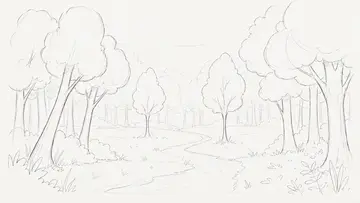

Nature Seed Piirrä polku. Tuo ne yhteen.
Ilmainen piirrä ja ratkaise -fysiikkapulma, jota voit pelata selaimessa. Piirrä viiva rajallisella musteella, ja siitä tulee ramppi, silta tai kiinniottopiste, joka vie Water Drop -hahmon Seed-hahmon luo. Jokainen ratkaistu taso palauttaa vesivärimetsän kohtauksen.
Julkaistu 18. syyskuuta 2026: 100 tasoa, viivatehokkuustähdet ja tallennettu eteneminen. Ilmainen alustoilla itch.io, Game Jolt ja indiexpo. iOS- ja Android-versio on tavoitteena, eikä se ole vielä sovelluskaupoissa.
Piirräpiirrä rajallisella musteella
Yhdistätuo Water Drop Seedin luo
Kukoistatuo metsä takaisin
Nykyisen koontiversion sisällä
Se, mitä piirrät, tulee osaksi tasoa.
Jokainen vahvistamasi veto muuttuu kiinteäksi esineeksi todellisine törmäyksineen, ja Water Drop ja Seed reagoivat siihen. Muste ja viivojen määrä ovat molemmat rajallisia, joten viivan muodolla on väliä.
Julkaisun tila Julkaistu 18. syyskuuta 2026

Pelin yleiskatsaus
Rentouttava piirrä ja ratkaise -pulma kahden pienen hahmon yhteen saattamisesta.
Idea
Piirrä polku, tuo Water Drop ja Seed yhteen ja katso, kuinka hiljainen luonnos herää eloon.
Käynnistä versio
100 pelattavaa tasoa kosketuspiirtämisellä, viivatehokkuustähdillä ja istuntojen välillä tallentuvalla etenemisellä.
Yleisö
Pelaajille, jotka pitävät rauhallisista pulmista, kevyestä fysiikasta, luontoteemoista ja stressittömistä mobiilipelihetkistä.
Tila
Julkaistu 18. syyskuuta 2026, ja sitä voi pelata ilmaiseksi selaimessa. Mobiiliversio on tavoitteena, mutta se ei ole vielä sovelluskaupoissa.
Ominaisuudet
Mitä teet Nature Seed -pelissä.
Ratkaise piirtämällä fyysisiä reittejä
Jokainen pulma alkaa maastosta sekä hahmoista Seed ja Water Drop. Pelaajan veto muuttuu rampiksi, sillaksi tai kiinniottopisteeksi, joka yhdistää heidät.
Selkeä fysiikkapalaute
Water Drop ja Seed liikkuvat tavalla, jota voi seurata, joten epäonnistunut yritys näyttää, mitä pitää muuttaa.
Palkinnot metsien ennallistamisesta
Suorita taso, niin luonnosteltu kohtaus täyttyy väreistä ja kasvavista puista.
Lyhyet tasot, piirtäminen kosketuksella
Tasot ovat lyhyitä ja piirrät kosketuksella, mikä sopii nopeisiin pelihetkiin puhelimella.
Pelisilmukka
Näin pelaat Nature Seed -peliä
- Vaihe 01Lue luonnos
Etsi rinteitä, aukkoja ja esteitä sekä turvallisin tapa yhdistää molemmat hahmot.
- Vaihe 02Piirrä viiva
Piirrä viivasi. Veto muuttuu rampiksi, ohjaimeksi tai kiinniottopisteeksi hahmoille.
- Vaihe 03Vahvista ja tarkkaile
Vahvista viiva ja katso hahmojen reaktioita. Näet, mikä toimi ja mikä ei.
- Vaihe 04Kukoista tai tarkenna
Jos Water Drop pääsee perille Seed-hahmon luo, metsä palaa. Jos ne menevät ohi, piirrä uudelleen juuri oppimasi pohjalta.
Tarina / maailma
Luonnosteltu metsä odottaa vettä.
Nature Seed alkoi piirrä ja ratkaise -fysiikkapulmana haurauden palauttamisesta sen sijaan, että esineitä työnnettäisiin yhteen.
Hahmoina ovat Seed, Water Drop ja metsä, joka palaa luonnoksesta väreihin pelatessasi. Jokainen pulma on pieni tehtävä: tutki maastoa, piirrä polku ja auta vettä pääsemään jonkin kasvavan luo.
- Suunnittelulinja
- Rauhallista fysiikkaa ja näkyvää ennallistamista
- Hahmot
- Water Drop ja Seed
- Vuorovaikutus
- Kosketuspiirtäminen
- Taidonpalkinto
- Yhden viivan ratkaisu tuo kolme tähteä
Lyhyesti
Ilmainen selaimessa jo tänään, kohteena mobiili.
Käytössäsi on rajallinen määrä mustetta ja viivoja. Käytä niitä viedäksesi Water Drop -hahmon Seed-hahmon luo, pelaa sitten taso uudelleen ja tiivistä ratkaisusi yhteen viivaan kolmen tähden saamiseksi.
- Genre
- Piirrä ja ratkaise -fysiikkapulma
- Kohdealusta
- iOS / Android
- Pelisession muoto
- Lyhyet rauhalliset tasot
Lataa materiaalit
Nature Seed -pelin lehdistö- ja sisällöntuottajamateriaalit
WebP-esikatseluja lehdistöjuttuja, julkaisijoiden arviointia ja kauppasivuviittauksia varten. Täysresoluutioiset lähdetiedostot saatavilla pyynnöstä.
Tuotemerkki ja hahmot
 Water DropSininen hahmo, jonka täytyy päästä Seed-hahmon luo.
Water DropSininen hahmo, jonka täytyy päästä Seed-hahmon luo.
 Seed-hahmoVihreä hahmo, jonka luo Water Drop yrittää päästä.
Seed-hahmoVihreä hahmo, jonka luo Water Drop yrittää päästä.
 Puiden kasvuPuu, joka kasvaa ratkaisun jälkeen.
Puiden kasvuPuu, joka kasvaa ratkaisun jälkeen.
 MetsävalikkoPäävalikon tausta.
MetsävalikkoPäävalikon tausta.
 Pelin taustaTason tausta tyhjällä pelialueella.
Pelin taustaTason tausta tyhjällä pelialueella.
Ratkaise luonnostasoja piirtämällä
 Luonnostaso 01Luonnos ennen ratkaisua.
Luonnostaso 01Luonnos ennen ratkaisua.
 Luonnostaso 02Luonnos ennen ratkaisua.
Luonnostaso 02Luonnos ennen ratkaisua.
 Luonnostaso 03Luonnos ennen ratkaisua.
Luonnostaso 03Luonnos ennen ratkaisua.
 Luonnostaso 04Luonnos ennen ratkaisua.
Luonnostaso 04Luonnos ennen ratkaisua.
 Luonnostaso 05Luonnos ennen ratkaisua.
Luonnostaso 05Luonnos ennen ratkaisua.
 Luonnostaso 06Luonnos ennen ratkaisua.
Luonnostaso 06Luonnos ennen ratkaisua.
 Luonnostaso 07Luonnos ennen ratkaisua.
Luonnostaso 07Luonnos ennen ratkaisua.
 Luonnostaso 08Luonnos ennen ratkaisua.
Luonnostaso 08Luonnos ennen ratkaisua.
 Luonnostaso 09Luonnos ennen ratkaisua.
Luonnostaso 09Luonnos ennen ratkaisua.


Luonnostaso 10Luonnos ennen ratkaisua.Palautetut pulmakohtaukset
 Palautettu taso 01Palautettu ratkaisun jälkeen.
Palautettu taso 01Palautettu ratkaisun jälkeen.
 Palautettu taso 02Palautettu ratkaisun jälkeen.
Palautettu taso 02Palautettu ratkaisun jälkeen.
 Palautettu taso 03Palautettu ratkaisun jälkeen.
Palautettu taso 03Palautettu ratkaisun jälkeen.
 Palautettu taso 04Palautettu ratkaisun jälkeen.
Palautettu taso 04Palautettu ratkaisun jälkeen.
 Palautettu taso 05Palautettu ratkaisun jälkeen.
Palautettu taso 05Palautettu ratkaisun jälkeen.
 Palautettu taso 06Palautettu ratkaisun jälkeen.
Palautettu taso 06Palautettu ratkaisun jälkeen.
 Palautettu taso 07Palautettu ratkaisun jälkeen.
Palautettu taso 07Palautettu ratkaisun jälkeen.
 Palautettu taso 08Palautettu ratkaisun jälkeen.
Palautettu taso 08Palautettu ratkaisun jälkeen.
 Palautettu taso 09Palautettu ratkaisun jälkeen.
Palautettu taso 09Palautettu ratkaisun jälkeen.
 Palautettu taso 10Palautettu ratkaisun jälkeen.
Palautettu taso 10Palautettu ratkaisun jälkeen.
Kehityksen aikajana
Nature Seed -pelin kehityksen aikajana
- Kesä 2025Alkuperäinen konsepti
Nature Seed sai alkunsa ideasta rauhallisesta mobiilipulmasta, joka kertoo yhteydestä ja luonnon ennallistamisesta.
- lokakuu 2025Seed ja Water Drop -identiteetti
Viimeistelimme suunnitteludokumentin ja päätimme, että päähahmot ovat Seed ja Water Drop.
- joulukuu 2025Kehitys alkaa
Suunnittelimme ensimmäiset tasot paperilla, aloimme sitten rakentaa, ja ydinjärjestelmistä tuli pelattavia.
- helmikuu 2026Iso luonnostasojen läpikäynti
Iso karkea läpikäynti tasoista antoi meille pohjan myöhemmälle viimeistelylle ja tasapainotukselle.
- maaliskuu-huhtikuu 2026Mekaniikka ja tasotarkastus
Kävimme läpi ylimääräisiä mekaniikkoja ja luonnostasoja ja yksinkertaistimme tai työstimme ne uudelleen, jotta peli pysyisi rauhallisena.
- heinäkuu 2026Pystyprototyypin kierros
Heinäkuun versio toi rajallisella musteella piirtämisen, tehokkuustähdet, tallennetun etenemisen ja vakaan viivageneroinnin yhteen pelattavaan silmukkaan.
- 18. syyskuuta 2026Nature Seed -julkaisu
Peli julkaistiin nimellä Nature Seed, ja mukana oli 100 tasoa, viivatehokkuustähdet, tallennettu eteneminen ja vesivärien palautuskohtaukset.
Nature Seed UKK
Yleisiä kysymyksiä Nature Seed -pelistä
Onko Nature Seed ilmainen?
Kyllä. Voit pelata sitä ilmaiseksi selaimessa alustoilla itch.io, Game Jolt ja indiexpo.
Onko Nature Seed jo julkaistu?
Kyllä. Se julkaistiin 18. syyskuuta 2026 ja siinä on 100 tasoa. iOS- ja Android-versio on kohdealusta, eikä se ole vielä sovelluskaupoissa.
Millainen peli Nature Seed on?
Rentouttava piirrä ja ratkaise -fysiikkapulma. Piirtämäsi viivat muuttuvat kiinteiksi esineiksi, jotka auttavat Water Drop -hahmoa ja Seed-hahmoa kohtaamaan.
Miten Nature Seed -peliä pelataan?
Tutki maastoa, piirrä reitti rajallisella musteellasi ja katso, miten molemmat hahmot reagoivat. Jos ne ohittavat toisensa, piirrä uudelleen. Mitä vähemmän viivoja, sitä enemmän tähtiä, ja yksi viiva tuo kolme.
Kuka tekee Nature Seed -peliä?
WillowinWorlds, itsenäinen studio, joka tekee mobiilipulma- ja arcade-pelejä.
Voinko käyttää Nature Seed -pelin lehdistömateriaaleja?
Kyllä, lehdistölle, julkaisijoiden arviointiin ja kauppaviittauksiin. Lähdetiedostot pysyvät yksityisinä, ellet pyydä niitä meiltä.
Nature Seed Devlog
Mikä muuttui ja milloin
- Nature Seed -julkaisu
Nature Seed julkaistiin lopullisella nimellään ilmaisena selainpelinä alustoilla itch.io, Game Jolt ja indiexpo, ja mukana oli 100 tasoa, viivatehokkuustähdet ja tallennettu eteneminen.
- Tason 2 palautus- ja vakauskierros
Taso 2 käyttää nyt tuotantotaustapariaan, ja tason asettelu, törmäystarkistukset sekä läpäisypalaute ovat aiempaa luotettavampia.
- heinäkuu 2026Pelattava versio
Heinäkuun versio yhdisti rajallisella musteella piirtämisen, tehokkuustähdet, tallennetun etenemisen ja palautumispalautteen.
- huhtikuu 2026Tasojen uudelleentyöstö
Sisäisen arvioinnin jälkeen työstimme useita luonnostasoja uudelleen vähentääksemme monimutkaisuutta ja helpottaaksemme niiden lukemista puhelimella.
- maaliskuu 2026Mekaniikkakatsaus
Testasimme ylimääräisiä mekaniikkoja ja poistimme ne, jotka saivat tasot tuntumaan ahtailta.
- helmikuu 2026Iso luonnostasojen läpikäynti
Iso karkea läpikäynti tasoista muodosti pohjan myöhemmälle viimeistelylle ja tasapainotukselle.
- joulukuu 2025Kehitys alkaa
Ydinjärjestelmät siirtyivät suunnitteludokumentista pelattavaan muotoon.
- Kesä 2025Alkuperäinen konsepti
Nature Seed -pelin ensimmäinen versio oli idea rauhallisesta pulmasta, joka kertoo yhteydestä ja luonnon ennallistamisesta.